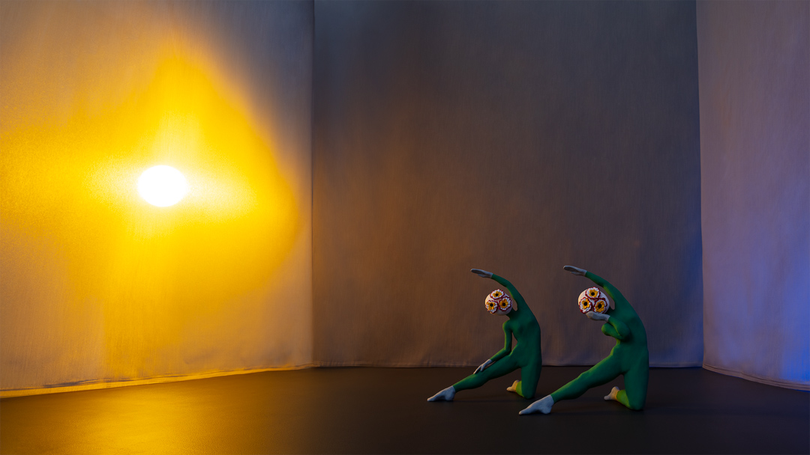
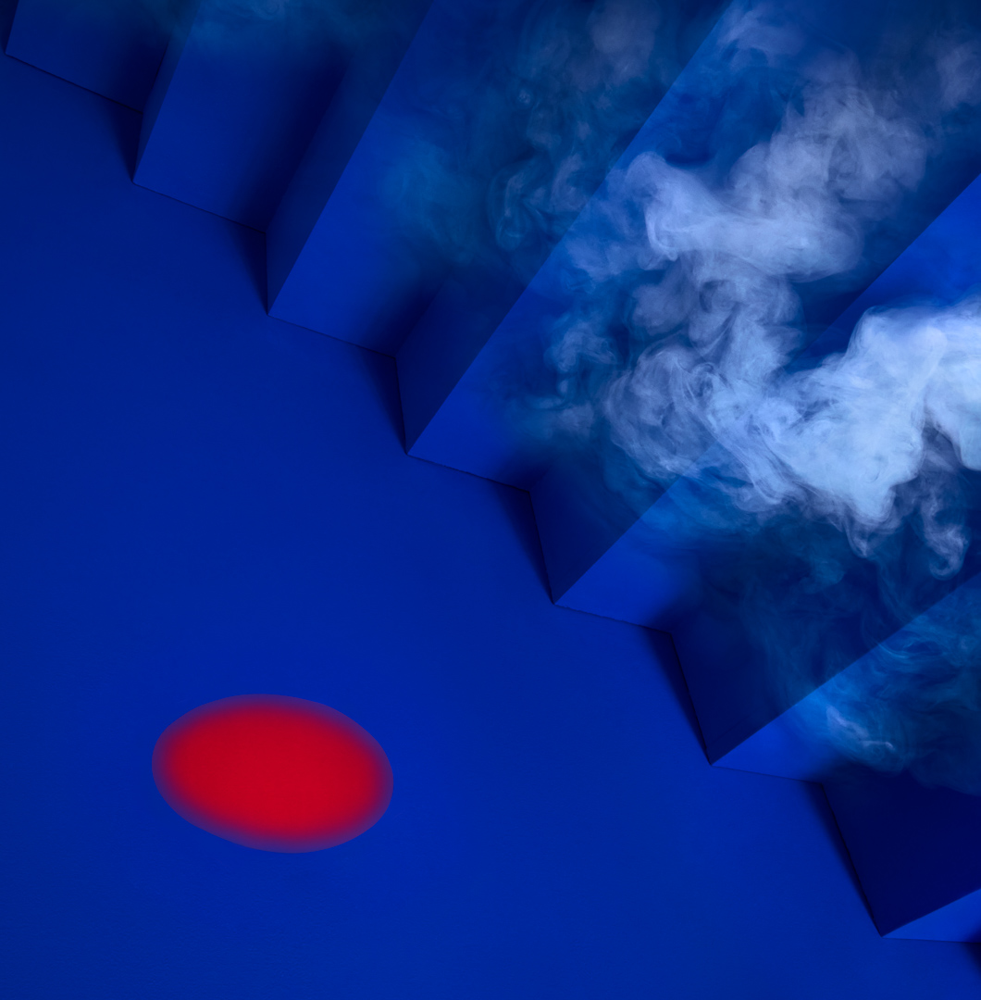
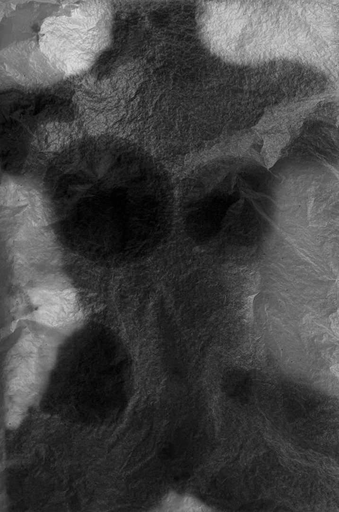
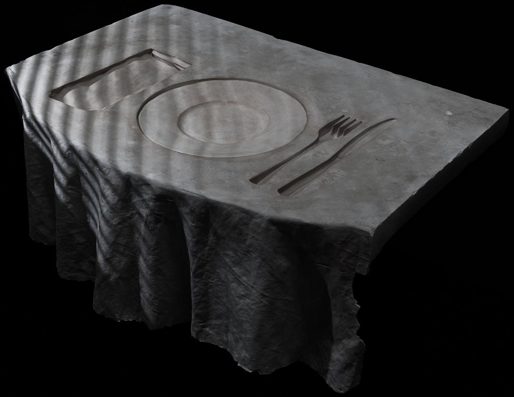
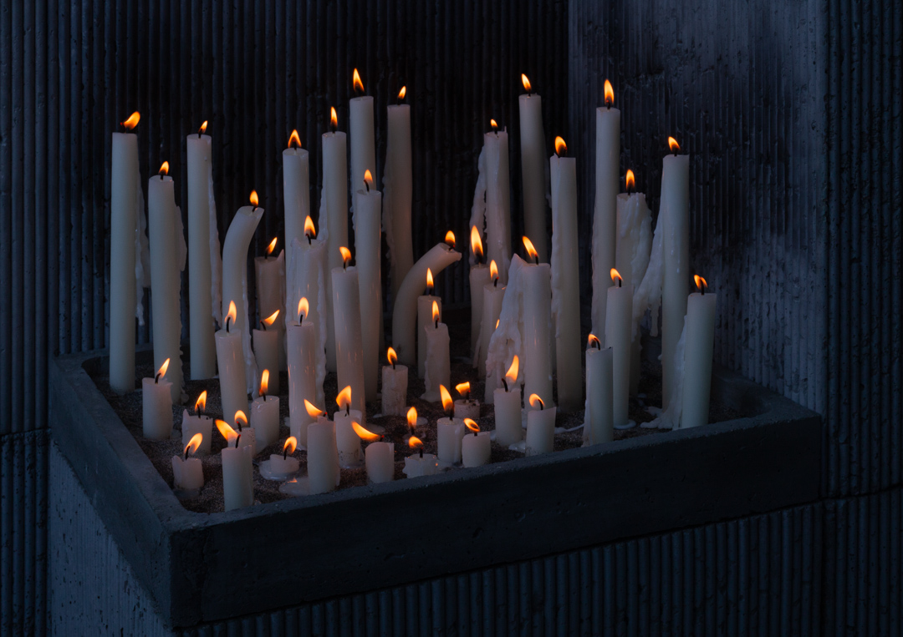

The Dreamer, 2024
51 x 57 inches
Photograph

Receivers, 2024
24 x 42.5 inches
photograph

Blue Smoke (for Alix), 2023
46 x 45 inches
photograph

Female-Figure, 2021
16 x 10 inches
photograph

Place Setting, 2020
28 x 32 inches
photograph

The Evening, 2022
36 x 26 inches
photograph
Solo Exhibitions
2024 Heather Cleary, Sean’s Room, Los Angeles, CA
2023 Return, W Projects, Vancouver, BC, Canada
2019 New Age, Dread Lounge, Los Angeles, CA
2014 sense non sense, UCLA New Wight Gallery, Los Angeles, CA
2011 New Forms, Cambridge Innovation Center, Cambridge, MA
Group Exhibitions
2024 2024 MassArt Alumni Biennial: Looking Backward. Looking Forward.,
Massachussettes College of Art and Design, Boston, MA
2022 Books and Things, Helen J Gallery, Los Angeles, CA
2020 Garden, Elizabeth St., Los Angeles, CA
2018 Specular Fiction, Fresh Window Gallery, Brooklyn, NY
2018 The Third Edition, Index, Los Angeles, CA
2017 True Love, Dread Lounge, Los Angeles, CA
2017 Project Room, Tif Sigfrids Gallery, Los Angeles, CA
2016 Refenestration, Tif Sigfrids Gallery, Los Angeles, CA
2014 Aggregate Exposure, George Lawson Gallery, San Fransisco, CA
2014 Frameshift, Denny Gallery, New York, NY
2013 MFA 2014 Exhibition, UCLA New Wight Gallery, Los Angeles, CA
2013 BLOG RE-BLOG, Signal, Brooklyn, NY
2013 The Object Salon, Roberts and Tilton, Los Angeles, CA
2013 Useful Pictures, Michael Matthews Gallery, New York, NY
2013 Collection, Vox Populi, Philadelphia, PA
2013 Hey, Hot Shot! 2012 First Edition Showcase, Jen Beckman Gallery, New York, NY
2012 Aufheben, Fuller Projects Gallery, Bloomington, IN
2012 VOX VIII, Juried by Ruba Katrib and Marlo Pascual, Vox Populi, Philadelphia, PA
2012 Small Works, Humble Arts Foundation/Magenta Foundation, Flash Forward Festival
Boston, MA
2011 Chain Letter, Samson Projects, Boston, MA
2011 Swap Meet, Boston Center for the Arts, Boston, MA
Public Collections
Los Angeles County Museum of Art
Bibliography
2023 Michelle Sproule, Heads Up, Scout Magazine
2015 Catherine Opie, Museé Magazine, Issue Eleven
2014 Julie Niemi, VIA publication, Issue 03 Ritual, Summer
2014 The Royal Obsession, Issue Two: Warrior
2014 LVL3 media, Artist of the week
2013 Chmielarz, Monika: Ed. Blow Magazine, Issue Eight
2012 THEartblog
2012 It’s Nice That
2012 HHS! Contender Hey, Hot Shot! Blog
2012 i like this art Blog
Education
2014 MFA Studio Art-Photography, UCLA, Los Angeles, CA
2003 BFA Photography, Massachusetts College of Art, Boston, MA
Awards
2013 Resnick Scholarship
2013 UCLA Art Council Award
2013 Lilian Levinson Foundation Scholarship